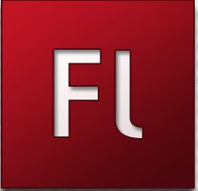

Programming has been my passion since College. I was first introduced to programming in middle school, HTML and CSS. I didn’t quite understand the languages at such an early age, but I indeed loved every moment of it. It was later in my collegiate life I became greatly intrigued to programming. C++ opened my eyes to the world of coding and showed me that my creativity on a computer is limitless! The very first software application I created was a calculator using C++. The more knowledge I gained acquired me to develop more complex things, hence a game I created called “Don’t Get Hit.” After C++, Java advanced me to new heights in my world of coding. Java caught my eye because it is found in almost every electronic device. With Java, I also created a more sophisticated calculator along with a game called “Floppy Block”, which is simply an emulation of the trendiest game at its time “Flappy Bird”. As I venture more into the programming world, HTML became a strong suit for me. With HTML I became affiliated with the languages CSS, bootstrap, JavaScript, jQuery, MySQL, and PHP. Using these languages, I have developed multiple websites.
Boni's Garage is one of the websites I created. Feel free to check it out.
Programming is amazing isn't it?! Whenever I code and the project works, it gives me such an amazing feeling. It feels like completing a puzzle, each right piece you connect, gets you closer to completing the puzzle.
You are probably wondering what applications I used to code. Well, I’m not going to tell you…. joking. For C++, I used the app called Visual Studio 2007 to 2016 and for Java, it was Eclipse. HTML, CSS, PHP, bootstrap, and JavaScript I went from using the app notepad, to sublime, to visual code, and to Brackets. Which one is my favorite out of the four? Brackets is by far my favorite, because you can customize the theme to your liking and not only that, you can preview your code in mobile or desktop mode. There are also extensions that you can add to brackets; like creating shortcuts for tabs in HTML and the developer that creates it can update any issue you notify him/her to.
Do you have a favorite movie actor or actress? My favorite actor is Jim Carrey, he always made me laugh in every single movie or show he was in. Just looking at his face alone is enough. The very first movie I watched with Jim Carrey in it, was The Mask. Next was Ace Ventura and after it was sequel to ace Ventura. Jim Carrey has really made it through a lot in his life and he has achieved many awards with the movies he has directed. The Ace Ventura Pet detective movie got him his first award as Best Comedic Performance as a nominee. The Mask which was in 1995, was the first award he won as Best Comedic Performance and from there he became a star. He continued to win in every single movie he was in or made until 2009, which was the movie called “Yes man”.
In high school I used to make animes with Adobe Flash CS3  and I upload a few on my YouTube account. Here is one of my videos